|
Tanlash operatoriga oid masalalar
Case1. 1-7 gacha bo’lgan butun sonlar berilgan. Kiritilgan songa mos ravishda hafta kunlarini so’zda ifodalovchi programma tuzilsin. (1-Dushanba,2-Chorshanba,…h.k)
Case2. K butun soni berilgan. Baho natijalarini chiqaruvchi programma tuzing.(1-yomon, 2-qoniqarsiz, 3-qoniqarli, 4-yahshi, 5-a’lo). Agar k soni 1-5 gacha oraliqqa tegishli bo`lmasa “xato” deb chiqarilsin.
Case3. Oy raqamini berilgan. Kiritilgan oy qaysi faslga tegishli ekanligini chiqaruvchi programma tuzilsin. (Masalan: 2 chi oy, “qish”)
Case4. Oy raqami berilgan. Shu oyda nechta kun borligini aniqlovchi programma tuzilsin.
Case5. A, B haqiqiy va amal butun soni berilgan. A va B sonlari ustida arifmetik amallar bajaruvchi progaramma tuzilsin. amal quyidagi qiymatlarni qabul qiladi: 1-qo`shish, 2-ayirish, 3-bo`lish, 4-ko`paytirish.
Case6. Uzinlik birliklari quyidagi tartibda berilgan. 1-desimetr, 2-kilometr, 3-metr, 4-millimeter, 5-santimetr. Uzunlik birligini bildiruvchi son berilgan (1 – 5 oraliqda) va shu birlikdagi kesma uzunligi berilgan (haqiqiy son). Kesmaning uzunligini metrlarda ifodalofchi programma tuzilsin.
Case7. Og`irlik birliklari quyidagi tartibda berilgan.1-kilogramm, 2-milligramm, 3-gramm, 4-tonna, 5-sentner. Og`irlik birligini bildiruvchi soni berilgan va shu birlikdagi og`irlik qiymati berilgan. Og`irlikni kilogramda ifodalofchi programma tuzilsin.
Case8. Sanani bildiruvchi ikkita butun son berilgan D (kun) va M (oy). (Kabisa bo`lmagan yil sanasi kiritiladi). Berilgan sanani ifodalovchi programma tuzilsin. Kabisa yilida 366 kun, kabisa bo’lmagan yilda 365 kun bor bo’ladi.
Case9. Ikkita butun son berilgan D (kun) va M (oy). (Kabisa bo`lmagan yil sanasi kiritiladi). Berilgan sanadan keyingi sanani ifodalovchi programma tuzilsin.
Case10. Robot faqat to`rtta tomonga ko`cha oladi(“s”-shimol, “j”-janub, “q”-sharq, “g”-g’arb) va uchta raqamli kamanda: 0-harakni davom ettir, 1-chapga buril, 2-o`ngga buril. Y - robot yo`nalishi va K - kamanda berilgan. Berilgan kamanda bajarilgandan keying robot holatini aniqlovchi programma tuzilsin.
Case11. Lokatr dunyoning bir tomoniga qaratilgan(“s”-shimol, “j”-janub, “q”-sharq, “g”-g’arb) va uchta raqamli kamanda: 0-o`ngga buril, 1-chapga buril, 2-burilish 1800. C - lakatrning boshlang`ich holati va K1, K2 - kamandalar berilgan. Berilgan kamanda bajarilgandan keying lakatr holatini aniqlovchi programma tuzilsin.
Case12. Doiraning elementlari quyidagi tartibda nomerlangan. 1-radius R, 2-diametr
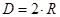, 3-uzunligi 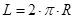, 4-doiraning yuzasi 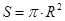. Shu elementlardan bittasi berilganda qolganlarini topuvchi programma tuzilsin. 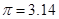
Case13. Tengyonli uchburchakning elementlari quyidagi tartibda nomerlangan. 1-katet a, 2-gipotenuza 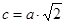, 3-gepotenuzaga tushirilgan baladlik 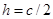, 4-yuzasi 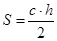. Shu elementlardan bittasi berilganda qolganlarini topuvchi programma tuzilsin.
Case14. Tengtomonli uchburchakning elementlari quyidagi tartibda nomerlangan. 1-tomoni a, 2-ichki chizilgan aylananing radiusi 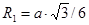, 3- tashqi chizilgan aylananing radiusi  , 4-yuzasi 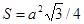. Shu elementlardan bittasi berilganda qolganlarini topuvchi programma tuzilsin. , 4-yuzasi 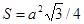. Shu elementlardan bittasi berilganda qolganlarini topuvchi programma tuzilsin.
Case15. O`yin kartasi turlari berilgan 1-g`isht, 2-olma, 3-chillak, 4-qarg`a. 10 lik kartadan katta kartalar quyidagi qiymatlarni o`zlashtirgan: 11-valet, 12-dama, 13-qirol, 14-tuz. Ikkita butun son berilgan N-karta qiymati(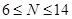), M-karta turi(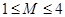) kiritilganda karta nomlarini (masalan: “olti qarg`a”) chiqarib beruvchi programma tuzilsin.
Case16. Yoshni yillarda aniqlovchi 20-69 gacha butun son berilgan. Son kiritilganda unga mos so`zlarda ifodalovchi programma tuzilsin. (“yigirma yosh”, “qirq uch yosh” va h.k.)
Case17. O`quv masalalarini aniqlovchi 10-40 gacha butun son berilgan. Son kiritilganda unga mos so`zlarda ifodalovchi programma tuzilsin. (“yigirmata masala”, “o`n uchta masala” va h.k.)
Case18. 100-999 gacha oraliqdagi sonlarni so’zlarda ifodalovchi programma tuzilsin. (masalan: 123-“bir yuz yigirma uch”).
Case19. Sharq kalendarida 60 yillik davr qabul qilingan. Yil muchali 5 ta rang (yashil, qizil, sariq, oq va qora) va 12 ta hayvon (sichqon, sigir, yo`lbars, quyon, ajdar, ilon, ot, qo`y, maymun, tovuq, it va to`ngizlardan) nomlaring kombinatsiyasidan kelib chiqadi. Yilning raqamiga qarab uning muchalini aniqlovchi programma tuzilsin. 1984-davr boshi: “Yashil sichqon yili”.
Case20. Ikkita burj vaqtlarini aniqlovchi butun son berilgan: D(kun), M(oy).
Berilgan sana qaysi burjga kirishini aniqlovchi programma tuzilsin.
“Qovg`a (20.1-18.2)”, “Baliq (19.2-20.3)”, “Qo`y (21.3-19.4)”, “Buzoq (20.4-20.5)’, “Egizaklar (21.5-21.6)”, “Qisqichbaqa (22.6-22.7)”, “Arslon (23.7-22.8)”, “Parizod (23.8-22.9)’, “Tarozi (23.9-22.10)”, “Chayon (23.10-22.11)’, “O`qotar (23.11-21.12)’, “Echki (22.12-19.1)”.
|